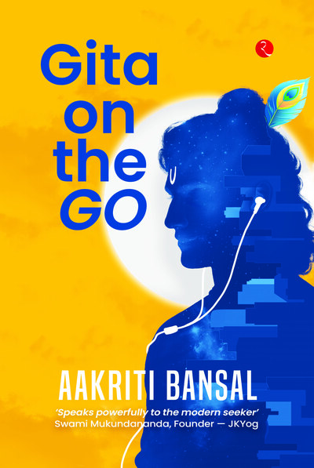

Marketing · Strategy · Storytelling
Dispatches from the intersection of marketing, culture, and the audacious pursuit of brand truth. Written for builders who mean business.
Indian Startup Times
"Illuminating wisdom for a fast-paced world — the inspiring journey of Aakriti Bansal"
Read FeatureWomen Entrepreneurs Review
"Driving brand growth by blending business strategy with bold, innovative creative thinking"
Read FeatureRupa Publications
"Gita on the Go" — Published Author · 5,000+ copies sold across India
View Author PageLatest Writings
On the Ground
Raw, honest stories from inside real consulting engagements — the moments no brief captures.
The Naaritive
Naaritive Advisory is a space for sharp, honest thinking about brands, audiences, and the stories that actually stick. I write about marketing not as a set of tactics, but as a practice of deep curiosity and strategic empathy.
If you've ever felt that most marketing advice is surface-level noise — you're in the right place.
"Marketing is not about the stuff you make, but the stories you tell."
The Mind Behind It
Aakriti Bansal is a brand strategist, marketing consultant, and published author with over a decade of experience helping businesses find their voice and build audiences that actually care. She founded Naaritive Advisory to bring sharp, research-backed thinking to brands that want to grow with integrity.
Her work spans consumer insights, brand positioning, content strategy, and field-level consulting — from boardrooms in Mumbai to kirana shops in Latur. She believes the best marketing is built on deep understanding of people, not platforms.
Published Work
Books, case studies, and academic writing that put ideas into the world.

A distillation of the Bhagavad Gita's timeless wisdom into accessible, everyday philosophy. Published by Rupa Publications — 5,000+ copies sold across India, making ancient ideas urgently relevant to modern readers.
A peer-reviewed teaching case on international business strategy and political risk. In 2010, GMR secured a landmark airport contract in the Maldives — what followed was a masterclass in geopolitical exposure, contract cancellation, and a $270M arbitration battle in Singapore.
Find Me Online
Follow the thinking, join the conversation, or just drop in and say hello.